Yangın Tüpü Fiyatları 2026: Sıfır ve Dolum Maliyetleri Karşılaştırması
6 kg KKT, CO2 ve biyolojik köpüklü cihazların güncel piyasa fiyatları, sahte dolum tuzakları ve B2B satın alma tasarruf yöntemleri.
Rehberi Oku →Endüstriyel tesisler, üretim fabrikaları ve ticari binalar için TSE HYB 11827 sertifikalı yangın söndürme cihazları, adresli algılama teknolojileri ve 6331 İSG mevzuatına tam uyumlu periyodik bakım ortaklığı.
Yıllık Saha Tecrübesi
Periyodik Kontrollü Tesis
TSE & 6331 İSG Uyumu
İşletmenizin yangın güvenliği ihtiyaçlarını iletin, uzman mühendislerimiz 2 saat içinde teknik teklif hazırlasın.
Tüm ürünlerimiz TS EN 3-7, TS EN 671, TS EN 54 ve CE standartlarında olup Sanayi ve Teknoloji Bakanlığı tescillidir.
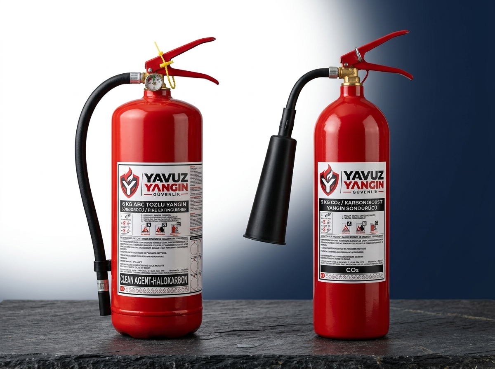
TS EN 3-7 + A1Kuru kimyevi tozlu (ABC), karbondioksitli (CO2) ve köpüklü (AFFF) taşınabilir ve tekerlekli söndürücüler.
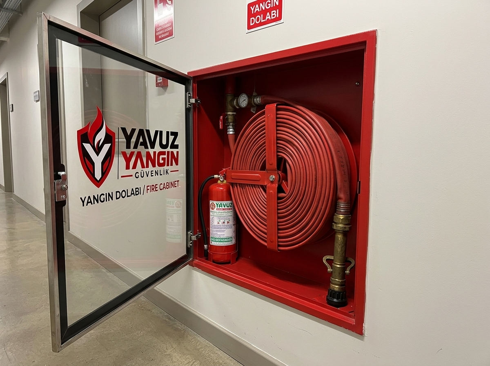
TS EN 671-1Sıva üstü, sıva altı, cam kapaklı ve tüp bölmeli elektrostatik toz boyalı yüksek mukavemetli dolaplar.
Yarı rijit kauçuk hortumlar ve poliüretan iç kaplamalı yassı dokuma itfaiyeci tipi basınçlı hortumlar.
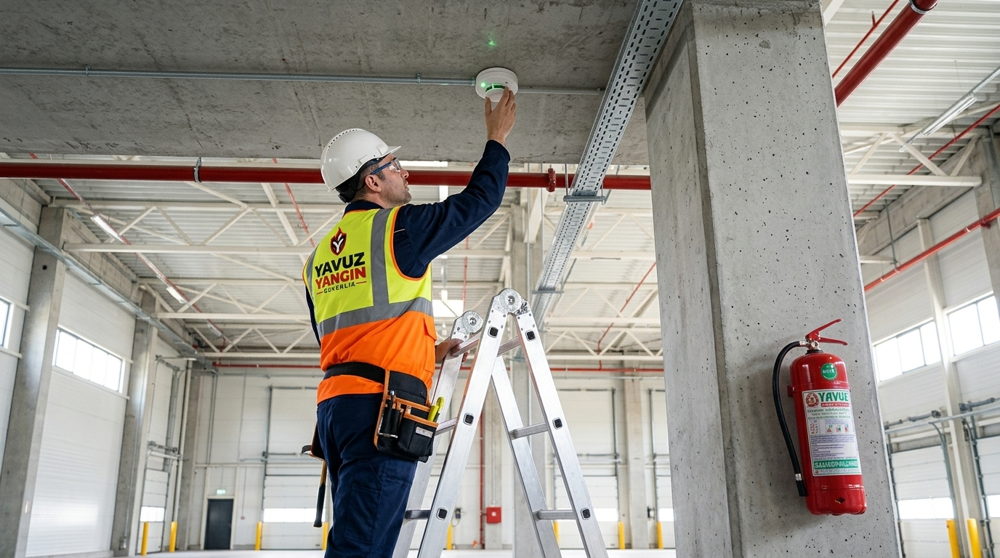
TS EN 54 ONAYLIAdresli ve konvansiyonel yangın alarm santralleri, optik duman, ısı ve kombine dedektörler, sirenler.
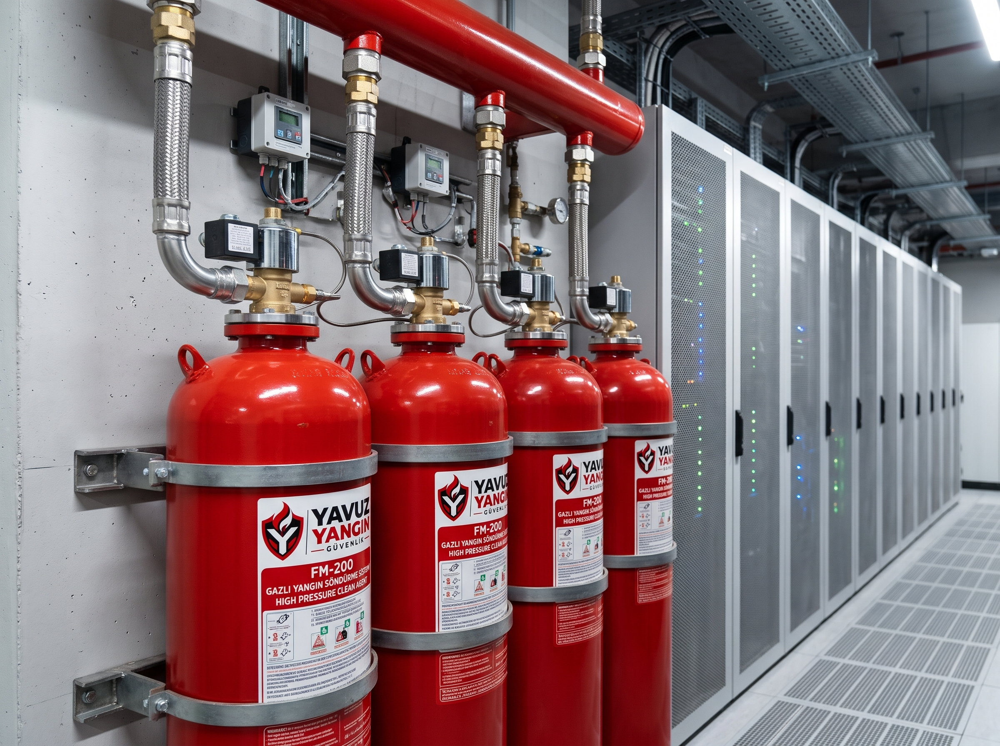
NFPA 2001 / ISO 14520Sunucu odaları ve elektrik panoları için FM-200, Novec 1230, CO2 ve mutfak davlumbaz söndürme.
 TS EN 14384
TS EN 14384
Fabrika sahaları ve açık alanlar için yer üstü ve yer altı döküm hidrantlar, hidrant dolapları ve anahtarları.
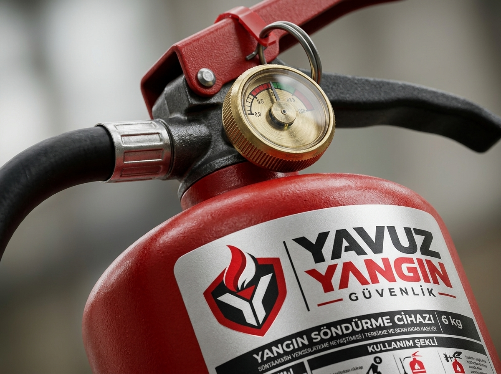
TS 12258Test drenaj vanaları, yükselen milli sürgülü vanalar, itfaiye bağlantı ağızları, jet & sis püskürtme lansları.
 EN 469 / EN 137
EN 469 / EN 137
İtfaiyeci müdahale elbiseleri, kasklar, çizmeler, eldivenler ve basınçlı temiz hava solunum setleri.
 TS EN 1838 / EN 60598
TS EN 1838 / EN 60598
Kesintide 3 saat aydınlatma sağlayan acil kaçış armatürleri, EXIT levhaları ve panik bar kilit mekanizmaları.
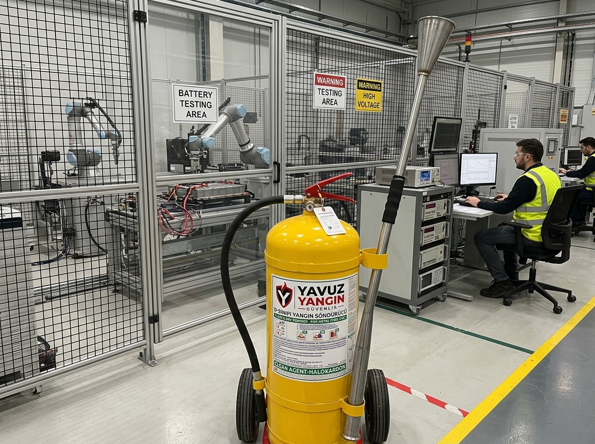
TS EN 615 / EN 1568Orijinal TS EN onaylı söndürme tozları, köpük konsantreleri ve kimyasal sıvı söndürme ajanları.
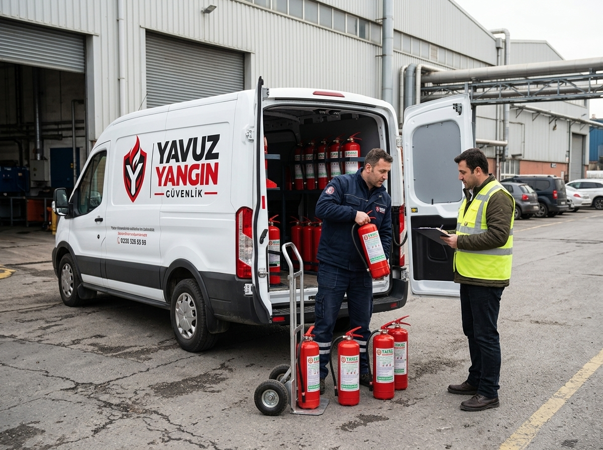
EN StandartlıYangın anı tahliye ve arama-kurtarma operasyonları için profesyonel kırıcı, kesici ve tahliye araçları.
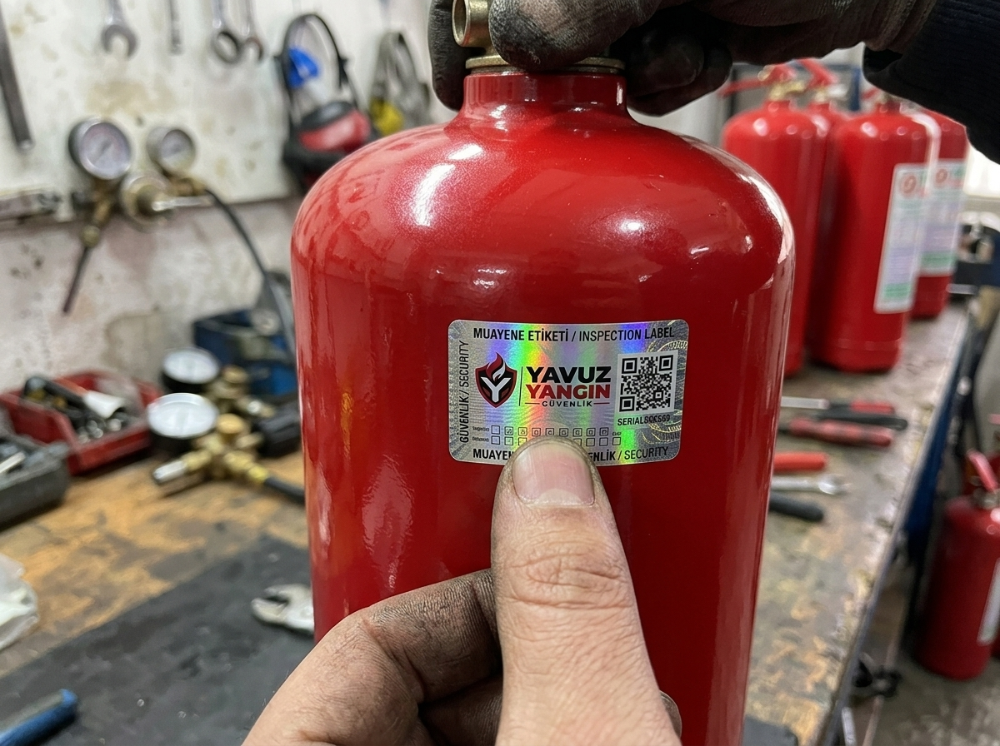
TSE HYB 11827İstanbul geneli yerinde dolum, hidrostatik basınç testi, barkodlu dijital takip ve yedek tüp temini.
 6331 İSG UYUMLU
6331 İSG UYUMLU
İşletmeler için sertifikalı yangın güvenliği eğitimleri, tahliye tatbikatları ve resmi yangın risk analiz raporu.
Fabrikalardan alışveriş merkezlerine, lojistik depolarından veri merkezlerine kadar tüm risk gruplarına özel periyodik mühendislik hizmeti.

Mobil servis aracımızla işletmenize geliyor, tüplerinizi yerinde muayene ediyor ve dolum süresince operasyonunuz aksamasın diye ücretsiz ikame tüp bırakıyoruz.
Süreç Detayları →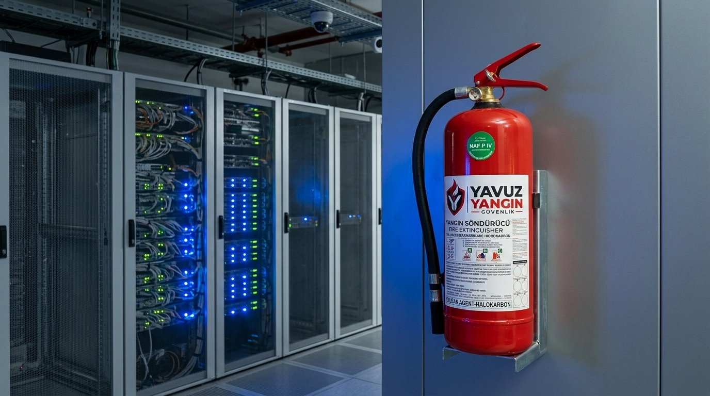
Server odaları, elektrik pano odaları ve müzeler için insan sağlığına zararsız, donanıma kalıntı bırakmayan FM-200 ve Novec 1230 kurulumları.
Süreç Detayları →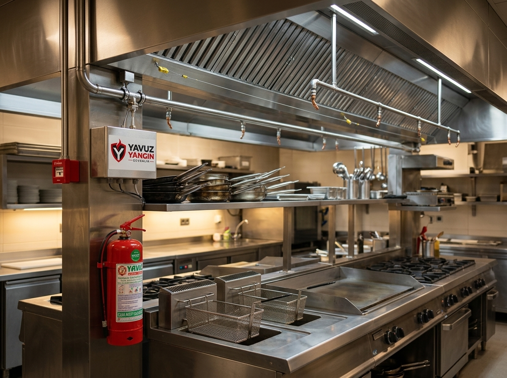
Otel ve restoran mutfakları için yüksek sıcaklıkta alevlenen kızgın yağ yangınlarına karşı F sınıfı sıvı söndürücülü otomatik mekanik kitler.
Süreç Detayları →Endüstriyel tesislerinizde TS EN 671 standartlarında yangın dolaplarının montajı, hat testleri, su debisi ölçümleri ve periyodik sızdırmazlık kontrolleri.
Süreç Detayları →Akıllı adresli sensörler, kablosuz hibrit çözümler, duman emme (aspirasyon) ve alev dedektörleri ile sıfır hatalı alarm hassasiyeti.
Süreç Detayları →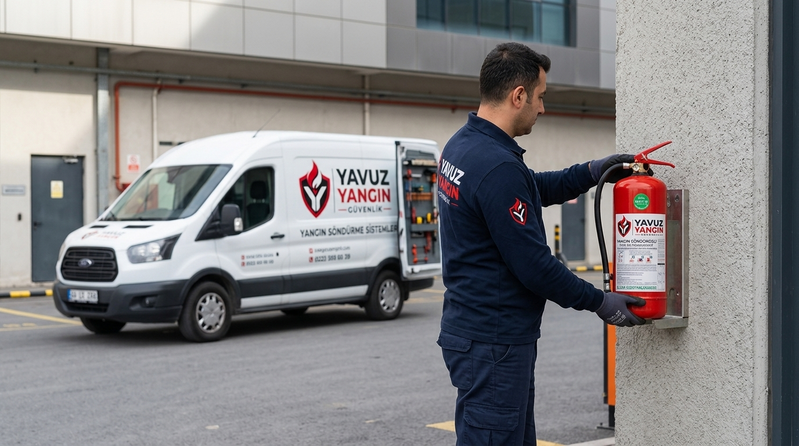
Barkodlu dijital takip sistemiyle 6 ayda bir manometre ve ağırlık kontrolü, yıllık resmi bakım raporu ve İSG denetimlerine %100 hazırlık.
Süreç Detayları →İstanbul ve Marmara genelinde sanayi tesisleri, veri merkezleri, lojistik antrepolar ve ticari yapılarda gerçekleştirdiğimiz TSE standartlarında yangın güvenlik uygulamaları.

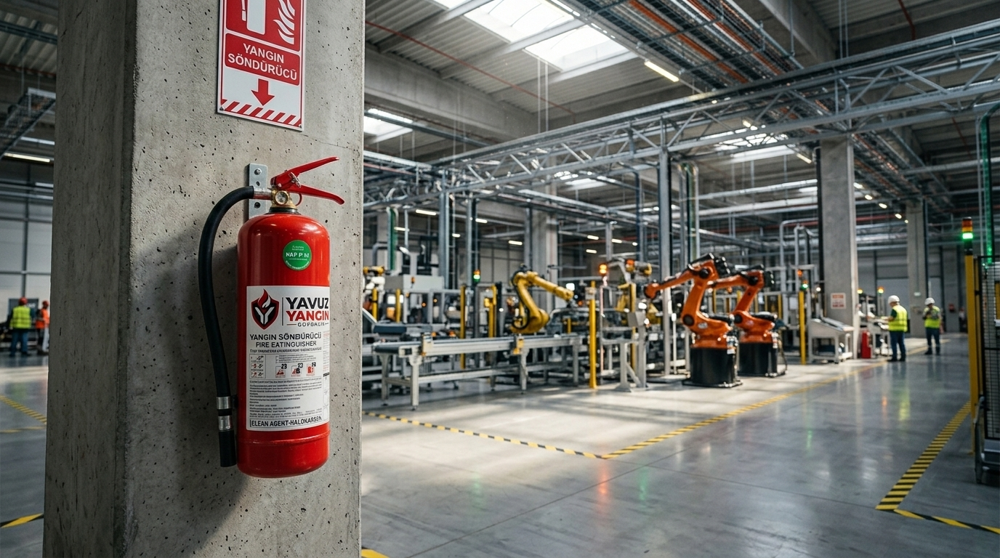
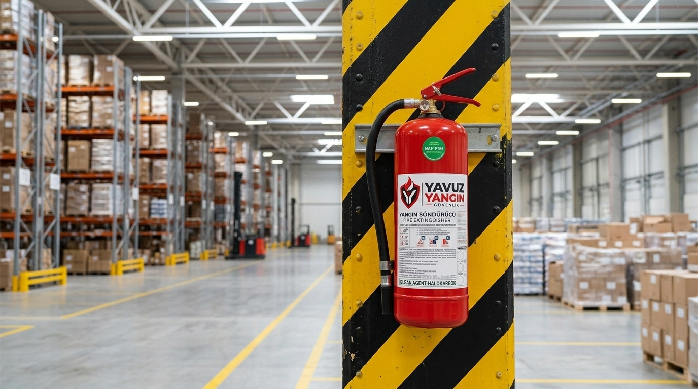
Binaların Yangından Korunması Hakkında Yönetmelik Madde 99 kriterlerine göre tesis alanınıza ve tehlike sınıfınıza uygun tüp ve sistem ihtiyacını anında belirleyin.
* Hesaplama sonuçları ön bilgilendirme amaçlıdır; tesis onaylı mimari projeniz ve uzman mühendis yerinde keşfi esastır.
Tesis yöneticileri, satın alma müdürleri ve İSG uzmanları için hazırladığımız kapsamlı mevzuat ve ekipman rehberleri.
6 kg KKT, CO2 ve biyolojik köpüklü cihazların güncel piyasa fiyatları, sahte dolum tuzakları ve B2B satın alma tasarruf yöntemleri.
Rehberi Oku →
Gövde kalınlığı, manometre kalitesi, vana emniyeti ve TS EN 3-7 standardı kontrolleriyle merdiven altı riskleri sıfırlayın.
Rehberi Oku →
İş müfettişleri denetimlerinde istenen periyodik kontrol raporları, hidrostatik test süreleri ve idari para cezası muafiyetleri.
Rehberi Oku →